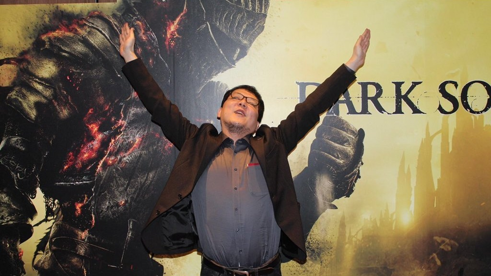

Хидетаки Миядзаки
Хидэтака Миядзаки родился 19 сентября 1974 года[1][2] в городе Сидзуока, Япония[3]. Он учился в Университете Кэйо и получил диплом в области социальных наук, позже устроился на работу менеджером по работе с клиентами в американскую корпорацию Oracle, чтобы оплатить обучение сестры в колледже[4][5]. По рекомендации друга Миядзаки прошёл игру Ico 2001 года, что привело его к желанию изменить свою карьеру и стать геймдизайнером[3]. В возрасте 29 лет, не имея опыта работы в индустрии, Миядзаки столкнулся с тем, что лишь немногие игровые компании были готовы взять его на работу, и одной из таких оказалась FromSoftware. В 2004 году он начал работать над Armored Core: Last Raven, присоединившись к работе над игрой на середине её разработки[3][5]. Позже он стал руководителем игры Armored Core 4 и её прямого сиквела Armored Core: For Answer[5]. Когда Миядзаки узнал о проекте, который впоследствии получил название Demon’s Souls, он был воодушевлён перспективой создания фэнтезийной ролевой игры и предложил свою помощь[3]. Проект до момента привлечения его к работе считался студией провальным. Миядзаки считал, что компания позволит ему полностью контролировать проект, поскольку любые дальнейшие неудачные задумки не повредят игре[3]. Несмотря на то, что на выставке Tokyo Game Show 2009 игра была принята неоднозначно и продавалась гораздо хуже ожидаемых показателей, через несколько месяцев она начала набирать популярность и вскоре нашлись издатели, готовые выпустить игру за пределами Японии[3]. После успеха духовного наследника игры Dark Souls, вышедшей в 2011 году, Миядзаки был назначен президентом компании в мае 2014 года[6][7]. Подобные случаи, когда человек меняет род деятельности и становится президентом компании в течение 10 лет, считаются в Японии беспрецедентными[3]. В 2012 году Sony Computer Entertainment обратилась к FromSoftware с предложением о совместной разработке новой игры. Миядзаки поинтересовался возможностью создания проекта для консолей восьмого поколения, и в результате сформировалась концепция игры Bloodborne. Несмотря на отсутствие сюжетных или сеттинговых связей с предыдущими играми FromSoftware, Миядзаки отметил, что игра несёт в себе ДНК Demon’s Souls и её особенный дизайн уровней[8]. Работа шла параллельно с разработкой Dark Souls II, которую Миядзаки только курировал, так как не мог руководить обеими играми одновременно[9]. После релиза Bloodborne в марте 2015 года Миядзаки вернулся к работе над серией Dark Souls в качестве ведущего директора игры Dark Souls III, которая была выпущена в начале следующего года[10][11]. После её релиза он объявил о намерении прекратить разработку серии Dark Souls[12][13]. Следующими двумя его проектами стали игра в виртуальной реальности Déraciné 2018 года и приключенческий экшен Sekiro: Shadows Die Twice 2019 года, который получил несколько наград[14][15]. Миядзаки также выступил руководителем игры Elden Ring, разработанной в сотрудничестве с американским писателем Джорджем Мартином[16]. Игра разошлась тиражом более 25 млн копий и была названа одной из величайших компьютерных игр всех времён[17][18][19][20]. В дальнейшем Миядзаки занимал должность руководителя игры Armored Core VI: Fires of Rubicon 2023 года, до того как эту роль взял на себя Масару Ямамура

